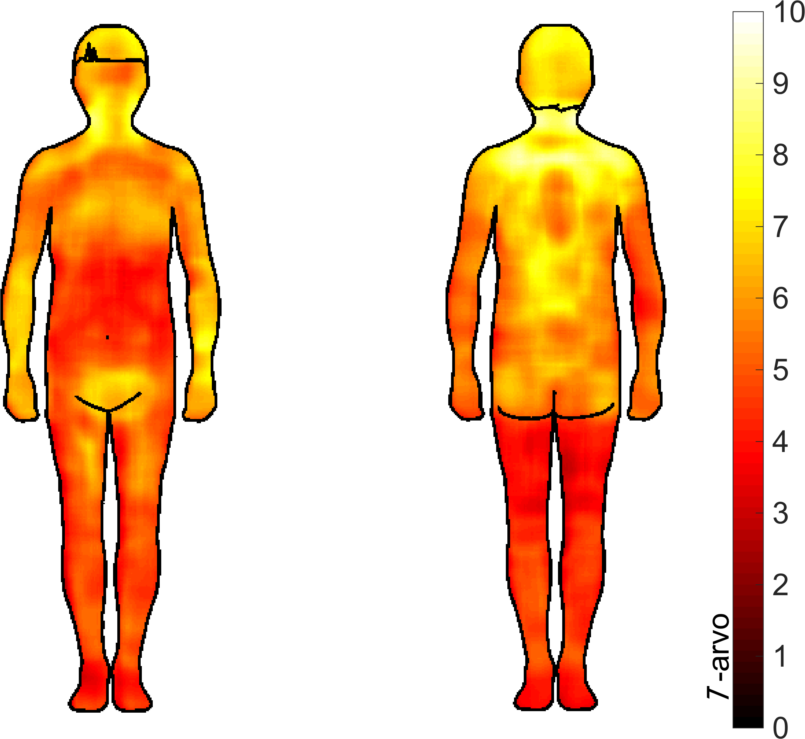

Paijaamisen lyhyt oppimäärä
Miksi
Olemme biologisesti virittyneitä koskettamaan toisiamme. Kosketettavana oleminen voi tuntua todella kivalta (Triscoli et al. 2017). Myös koskettaminen voi olla miellyttävää (Triscoli et al. 2017), etenkin koska subjektiivisesti arvioiden toisten iho tuntuu pehmeämmältä ja miellyttävämmältä koskettaa kuin oma ihomme (Guest et al., 2009; Gentsch et al., 2015).Sosiaalisella koskettamisella on myös paljon positiivisia vaikutuksia. Kosketus voi vaikuttaa sosiaalisiin suhteisiimme sekä psyykkiseen ja fyysiseen hyvinvointiimme (Jakubiak & Feeney, 2016). Arjessa saatujen halausten määrä on yhteydessä parempaan immuunipuolustukseen (Cohen et al., 2015) ja kosketus voi lieventää fysiologista reaktiota akuuttiin stressiin. Esimerkiksi, jos pitää pitää jännittävä puhe, ennen tilaisuutta läheisen ihmisen kädestä kiinni pitäminen lieventää fysiologisia stressireaktiota (Ditzen et al. 2007).
Ainakin romanttisissa parisuhteissa kosketus voi kertoa meille suhteen tilasta (Kontula, 2016) ja kosketus voi myös vaikuttaa suhdetta lähentävästi (Floyd et al., 2009). On erittäin todennäköistä, että tämä on totta myös muissa ihmissuhteissa, mutta tutkimusnäyttö parisuhteiden ulkopuolella on vähäisempää (Suvilehto, 2018).
Miten
Hyvät uutiset: todennäköisesti osaat jo paijata juuri oikein. Vaikka yksilöiden välistä vaihtelua onkin, keskimäärin miellyttävimmäksi kosketukseksi arvioidaan pehmeä, rauhallinen (n 1-10 cm/s) paijaaminen (Croy et al. 2015; Sehlstedt et al., 2016). Tämä on juuri se nopeus, jolla ihmiset spontaanisti paijaavat toista ihmistä (Croy et al. 2015).
Mikäli olet epävarma, voit pyytää paijattavalta ohjeita hänelle sopivasta paijaamisesta. Haluaako hän sitä nopeammin, hitaammin, pehmeämmin, jollain muulla tavalla?
Mitä
Melkein kaikkien alueiden kosketus voi tuntua miellyttävältä. Suuri osa ihmisistä pitää erityisesti selän paijaamista miellyttävänä (Walker et al., 2017), mutta myös käsivarsien ja pään alueen koskettaminen koetaan keskimäärin miellyttävänä (Suvilehto et al., 2015). Jos teet paijausvaihtokauppaa vaikka kaverin kanssa, on hyvä reilusti ilmaista mihin toivot itseäsi kosketettavan.
Ota myös huomioon, että paijaajan ja paijattavan välinen suhde vaikuttaa siihen, mille alueille ja millainen koskettaminen tuntuu luontevalta ja mukavalta. Yllä mainituista alueista, joilla koskettaminen tuntuu erityisen hyvältä, käsivarret ovat se alue, joihin koskettaminen on vähiten rajattu vain läheisimpiin ihmisiin (tämän jälkeen yläselkä, sitten pää ja viimeisenä alaselkä, Suvilehto et al., 2015). Käsivarren tai yläselän paijaaminen voi siis olla sopivan neutraali lähtötilanne.

Kehon kartta alueista, joiden koskettaminen koetaan miellyttävänä. Mitä vaaleampi väri, sitä useampi vastaajista (N = 76) raportoi nauttivansa kosketuksesta tälle alueelle. (Lähde: Suvilehto et al., 2015)
Yleisesti ottaen paijaamisen tulkitaan viestittävän tykkäämistä ja läheisyyttä (Kirsch et al., 2017). Tämä saattaa vaikuttaa siihen, että joissain ihmissuhteissa paijaaminen ei ole toivottua, esimerkiksi jos on mahdollista että jompikumpi osapuoli tulkitsee tilanteen romanttis- tai seksuaalissävytteiseksi. On myös ihmisiä, jotka eivät pidä kosketettavana olemisesta. Varmistathan siis etukäteen, että paijauskaverisi on mielellään mukana paijausvaihdossa. Jos sinun on vaikea löytää lähipiiristäsi sopivaa paijaajaa, voit myös harkita hierojalla käymistä. Tutkimusten mukaan hieronnassa käynti voi antaa samanlaisia hyötyjä kuin paijattavana oleminen (Field, 2011).
Lopuksi
Mikäli paijaamisteema kiinnostaa, voit tulla kuulemaan lisää väitöstilaisuuteeni to 15.11. kello 12 alkaen Lumituuli-salissa (Dipoli, Espoo) tai arvoisan vastaväittäjäni Francis McGlonen esitykseen pe 16.11. kello 12.30 huoneessa U135a (“Nokia”) (Otakaari 1, Espoo). Kiitos Hannu Jakkolalle avusta tämän tekstin kanssa.
Lähteet
Croy I, Luong A, Triscoli C, Hofmann E, Olausson H, Sailer U. 2015 Interpersonal stroking touch is targeted to C tactile afferent activation. Behav. Brain Res. 297, 37–40. (doi:10.1016/j.bbr.2015.09.038)Ditzen B, Neumann ID, Bodenmann G, von Dawans B, Turner RA, Ehlert U, Heinrichs M. 2007 Effects of different kinds of couple interaction on cortisol and heart rate responses to stress in women. Psychoneuroendocrinology 32, 565–574. (doi:10.1016/j.psyneuen.2007.03.011)
Field T. 2011 Touch for socioemotional and physical well-being: A review. Dev. Rev. 30, 367–383. (doi:10.1016/j.dr.2011.01.001)
Floyd K, Boren JP, Hannawa AF, Hesse C, McEwan B, Veksler AE. 2009 Kissing in marital and cohabiting relationships: Effects on blood lipids, stress, and relationship satisfaction. West. J. Commun. 73, 113–133. (doi:10.1080/10570310902856071)
Jakubiak BK, Feeney BC. 2016 Affectionate touch to promote relational, psychological, and physical well-being in adulthood: a theoretical model and review of the research. Personal. Soc. Psychol. Rev. 21, 228–252. (doi:10.1177/1088868316650307)
Kirsch LP, Krahé C, Blom N, Crucianelli L, Moro V, Jenkinson PM, Fotopoulou A. 2017 Reading the mind in the touch: neurophysiological specificity in the communication of emotions by touch. Neuropsychologia (doi:10.1016/j.neuropsychologia.2017.05.024)
Kontula O. 2016 Seksuaalinen hyvinvointi parisuhdeonnen avaimena. Saatavilla http://www.vaestoliitto.fi/@Bin/6081349/Perhebarometri_2016_netti.pdf
Löken LS, Wessberg J, Morrison I, McGlone F, Olausson H. 2009 Coding of pleasant touch by unmyelinated afferents in humans. Nat. Neurosci. 12, 547–8. (doi:10.1038/nn.2312)
Morrison I, Löken LS, Olausson H. 2010 The skin as a social organ. Exp. Brain Res. 204, 305–14. (doi:10.1007/s00221-009-2007-y)
Sehlstedt I, Ignell H, Backlund Wasling H, Ackerley R, Olausson H, Croy I. 2016 Gentle touch perception across the lifespan. Psychol. Aging 31(2), 176. (doi:10.1037/pag0000074)
Suvilehto JT. 2018 Maintaining social bonds via touching: A cross-cultural study. Aalto University publication series DOCTORAL DISSERTATIONS, 210/2018.
Suvilehto JT, Glerean E, Dunbar RIM, Hari R, Nummenmaa L. 2015 Topography of social touching depends on emotional bonds between humans. Proc. Natl. Acad. Sci. U. S. A. 112. (doi:10.1073/pnas.1519231112/)
Vallbo Å, Olausson H, Wessberg J, Norrsell U. 1993 A system of unmyelinated afferents for innocuous mechanoreception in the human skin. Brain Res. 628, 301–304. (doi:10.1016/0006-8993(93)90968-S)